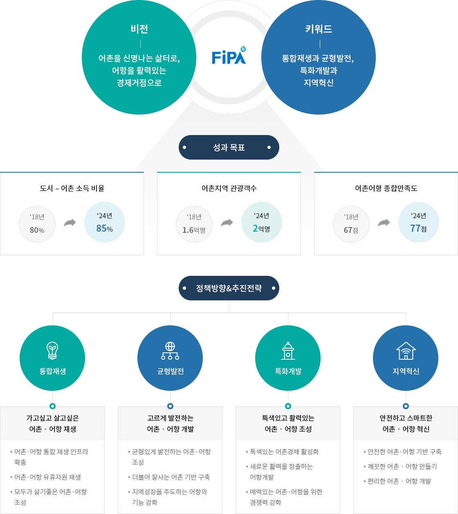
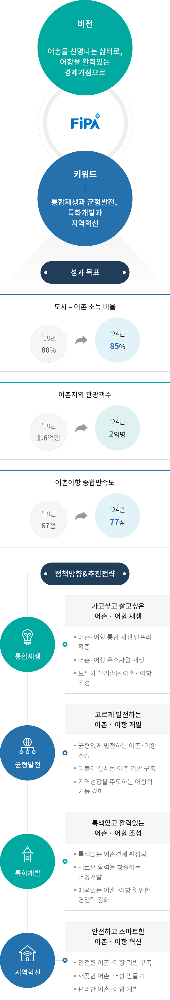

어촌정책추진방향
- 홈
- 어항/어촌 정보
- 어촌
- 어촌정책추진방향


비전 - 어촌을 신명나는 삶터로, 어항을 활력있는 경제거점으로
키워드 - 통합재생과 균형발전, 특화개발과 지역혁신
성과목표
- 도시 - 어촌 소득 비율 ‘18년 80% -> ‘24년 85%
- 어촌지역 관광객수 ‘18년 1.6억명 -> ‘24년 2억명
- 어촌어항 종합만족도 ‘18년 67점 -> ‘24년 77점
| 정책방향 | 통합재생 - 가고싶고 살고싶은 어촌 · 어항 재생 | 균형발전 - 고르게 발전하는 어촌 · 어항 개발 | 특화개발 - 특색있고 활력있는 어촌 · 어항 조성 | 지역혁신 - 안전하고 스마트한 어촌 · 어항 혁신 |
|---|---|---|---|---|
| 추진 전략 |
|
|
|
|
※ 출처: 제3차 어촌어항발전기본계획